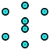
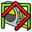
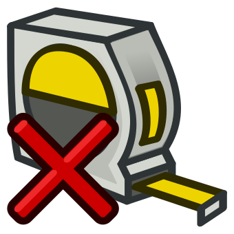

Std View Menu/ro

Introduction
The Std View Menu is one of the 7 sub-menus in the standard menu:
File Edit View Tools Macro Windows Help
The View menu provides tools to change the 3D View and the view properties of objects in the model, and tools related to the display of interface components.
Conține toate funcțiile legate de afișarea modelului, cum ar prezentarea panourilor, zoom, etc.
The following tools are available in this menu:
{kind=link}
{kind=link}
 Fullscreen: Toggles the main window's fullscreen mode.
Fullscreen: Toggles the main window's fullscreen mode.
- Standard views
 Fit all: Fits all visible objects inside the view.
Fit all: Fits all visible objects inside the view. Fit selection: Fits selected objects inside the view.
Fit selection: Fits selected objects inside the view.- Axonometric
 Home: Switches to the default home view. introduced in 0.19
Home: Switches to the default home view. introduced in 0.19 Front: Switches to the front view.
Front: Switches to the front view. Top: Switches to the top view.
Top: Switches to the top view. Right: Switches to the right view.
Right: Switches to the right view. Rear: Switches to the rear view.
Rear: Switches to the rear view. Bottom: Switches to the bottom view.
Bottom: Switches to the bottom view. Left: Switches to the left view.
Left: Switches to the left view.- Rotate Left: Rotates the view to the left.
- Rotate Right: Rotates the view to the right.
{kind=link}
{kind=link}
- Freeze display
- Salvarea vizualizări...
- Încarcă vizualizări...
- Înghețare vizualizare
- Ștergere vizualizări
- Stilul de desen
- Așa cum este
- Filiform cu fațete plane
- Cu umbre
- Filiform

Puncte
{kind=link}
{kind=link}
{kind=link}
{kind=link}
{kind=link}
 Bounding Box: Toggles the bounding box highlighting mode.
Bounding Box: Toggles the bounding box highlighting mode.
- Stereo
 Stereo red/cyan: Switches to red/cyan stereo view.
Stereo red/cyan: Switches to red/cyan stereo view. Stereo quad buffer: Switches to quad buffer stereo view.
Stereo quad buffer: Switches to quad buffer stereo view. Stereo Interleaved Rows: Switches to interleaved rows stereo view.
Stereo Interleaved Rows: Switches to interleaved rows stereo view. Stereo Interleaved Columns: Switches to interleaved columns stereo view.
Stereo Interleaved Columns: Switches to interleaved columns stereo view. Stereo Off: Switches stereo view off.
Stereo Off: Switches stereo view off. Issue camera position: Prints camera settings in the Report view and the Python console.
Issue camera position: Prints camera settings in the Report view and the Python console.
- Zoom see also Mouse Model
- Document window
{kind=link}
{kind=link}
{kind=link}
- Document Window
- Docked: Docks a 3D View.
- Undocked: Undocks a 3D View.
 Fullscreen: Toggles a 3D View's fullscreen mode.
Fullscreen: Toggles a 3D View's fullscreen mode.
- Toggle axis cross
 Clipping plane: Temporarily clips objects.
Clipping plane: Temporarily clips objects.
- Texture mapping see Macro Texture Objects and Vista texture
- Visibility
- Toggle visibility (....) (... "space")
- Show selection
- Hide selection
- Toggle all objects
- Show all objects
- Hide all objects
- Toggle selectability

Toggle measurement
Clear measurement
{kind=link}
{kind=link}
{kind=link}
- Toggle navigation/edit mode
 Material: Sets the material of selected objects. -- Available if the Material Workbench has been loaded directly or indirectly (via for example the Part Workbench or the PartDesign Workbench). introduced in 1.0
Material: Sets the material of selected objects. -- Available if the Material Workbench has been loaded directly or indirectly (via for example the Part Workbench or the PartDesign Workbench). introduced in 1.0
- Appearance...
- Viewing mode
- Material
- Display
- Point size
- Line width
- Transparency
- Line transparency
- Random color
 Appearance per Face: Sets the display properties of selected faces. -- Available if the Part Workbench or the PartDesign Workbench is active.
Appearance per Face: Sets the display properties of selected faces. -- Available if the Part Workbench or the PartDesign Workbench is active.
 Toggle Transparency: Toggles the transparency of selected objects. introduced in 1.0
Toggle Transparency: Toggles the transparency of selected objects. introduced in 1.0
- Workbench -- Select a workbench from the submenu.
- Toolbars
- File
- Macro
- View
- Part Design
- Sketcher geometries
- Sketcher constraints
- Bolts
- Info
- FreeCAD Part
- Screw
- Draft Snap
- Panels -- Each panels can be switched on or off in the submenu.
- Overlay Docked Panel introduced in 1.0
- Toggle Overlay for All Panels: Toggles overlay mode for all docked windows.
- Toggle Transparent Panels: Toggles transparent mode for all docked overlay windows. This makes the docked windows stay transparent at all times.
- Toggle Overlay: Toggles overlay mode for the docked window under the cursor.
- Toggle Transparent Mode: Toggles transparent mode for the docked window under cursor. This makes the docked window stay transparent at all times.
- Bypass Mouse Events in Overlay Panels: Bypasses all mouse events in docked overlay windows.
 Toggle Left: Shows/hides the left overlay panel.
Toggle Left: Shows/hides the left overlay panel. Toggle Right: Shows/hides the right overlay panel.
Toggle Right: Shows/hides the right overlay panel. Toggle Top: Shows/hides the top overlay panel.
Toggle Top: Shows/hides the top overlay panel. Toggle Bottom: Shows/hides the bottom overlay panel.
Toggle Bottom: Shows/hides the bottom overlay panel.
 Toggle Bottom Panels: Shows/hides the bottom panels (usually Report View and Python Console). introduced in 1.2
Toggle Bottom Panels: Shows/hides the bottom panels (usually Report View and Python Console). introduced in 1.2
- Link Navigation
 Go to Linked Object: Selects the linked object and switches to its document.
Go to Linked Object: Selects the linked object and switches to its document. Go to Deepest Linked Object: Selects the deepest linked object and switches to its document.
Go to Deepest Linked Object: Selects the deepest linked object and switches to its document. Select All Links: Selects all links to an object.
Select All Links: Selects all links to an object.
- Tree View Actions
- Sync View: Toggles the Tree View SyncView mode.
- Sync Selection: Toggles the Tree View SyncSelection mode.
- Sync Placement: Toggles the Tree View SyncPlacement mode.
- Preselection: Toggles the Tree View PreSelection mode.
- Record Selection: Toggles the Tree View RecordSelection mode.
- Single Document: Switches the Tree View to SingleDocument mode.
- Multi Document: Switches the Tree View to MultiDocument mode.
- Collapse/Expand: Switches the Tree View to CollapseDocument mode.
 Initiate Dragging: Initiates a drag operation for selected objects in the Tree View.
Initiate Dragging: Initiates a drag operation for selected objects in the Tree View. Go to Selection: Scrolls the Tree View to the first created object in a 3D View selection.
Go to Selection: Scrolls the Tree View to the first created object in a 3D View selection. Selection Back: Restores the previous Tree View selection.
Selection Back: Restores the previous Tree View selection. Selection Forward: Restores the next Tree View selection.
Selection Forward: Restores the next Tree View selection.
- Status bar
- File: New Document, Open, Open Recent, Close, Close All, Save, Save As, Save Copy, Save All, Revert, Import, Export,Merge Document, Document Information, Print, Print Preview, Export PDF, Exit
- Edit: Undo, Redo, Cut, Copy, Paste, Duplicate Object, Recompute, Box Selection, Box Element Selection, Select All, Delete, Send to Python Console, Placement, Transform, Align To, Toggle Edit Mode, Properties, Edit Mode, Preferences
- View:
- Miscellaneous: New 3D View, Orthographic View, Perspective View, Fullscreen, Bounding Box, Toggle Axis Cross, Clipping View, Texture Mapping, Toggle Navigation/Edit Mode, Material, Appearance, Random Color, Appearance per Face, Toggle Transparency, Workbench, Status Bar
- Standard Views: Fit All, Fit Selection, Align to Selection, Isometric, Dimetric, Trimetric, Home, Front, Top, Right, Rear, Bottom, Left, Rotate Left, Rotate Right, Store Working View, Recall Working View
- Freeze Display: Save Views, Load Views, Freeze View, Clear Views
- Draw Style: As Is, Points, Wireframe, Hidden Line, No Shading, Shaded, Flat Lines
- Stereo: Stereo Red/Cyan, Stereo Quad Buffer, Stereo Interleaved Rows, Stereo Interleaved Columns, Stereo Off, Issue Camera Position
- Zoom: Zoom In, Zoom Out, Box Zoom
- Document Window: Docked, Undocked, Fullscreen
- Visibility: Toggle Visibility, Show Selection, Hide Selection, Select Visible Objects, Toggle All Objects, Show All Objects, Hide All Objects, Toggle Selectability
- Toolbars: File, Edit, Clipboard, Workbench, Macro, View, Individual Views, Structure, Help, Lock Toolbars
- Panels: Tree View, Property View, Model, Selection View, Python Console, Report View, Tasks, DAG View
- Overlay Docked Panel: Toggle Overlay for All Panels, Toggle Transparent Panels, Toggle Overlay, Toggle Transparent Mode, Bypass Mouse Events in Overlay Panels, Toggle Left, Toggle Right, Toggle Top, Toggle Bottom
- Link Navigation: Go to Linked Object, Go to Deepest Linked Object, Select All Links
- Tree View Actions: Sync View, Sync Selection, Sync Placement, Preselection, Record Selection, Single Document, Multi Document, Collapse/Expand, Initiate Dragging, Go to Selection, Selection Back, Selection Forward
- Tools: Addon Manager, Measure, Clarify Selection, Quick Measure, Units Converter, Load Image, Save Image, Text Document, View Turntable, Scene Inspector, Dependency Graph, Export Dependency Graph, Document Utility, Edit Parameters, Customize
- Macro: Record Macro, Macros, Recent Macros, Execute Macro, Attach to Remote Debugger, Debug Macro, Stop Debugging, Step Over, Step Into, Toggle Breakpoint
- Help: What's This, Start Page, Users Documentation, FreeCAD Forum, Report an Issue, Restart in Safe Mode, Developers Handbook, Python Modules Documentation, FreeCAD Website, Donate to FreeCAD, About FreeCAD
- Additional:
- Miscellaneous: New Part, New Group, Variable Set, Link Group, Select All Instances, Toggle Freeze
- Datums: Coordinate System, Datum Plane, Datum Line, Datum Point
- Link Actions: Make Link, Make Sub-Link, Replace With Link, Unlink, Import Link, Import All Links
- Expression Actions: Copy Selected, Copy Active Document, Copy All Documents, Paste
- Selection Filter: Vertex Selection, Edge Selection, Face Selection, No Selection Filters
- Getting started
- Installation: Download, Windows, Linux, Mac, Additional components, Docker, AppImage, Ubuntu Snap
- Basics: About FreeCAD, Interface, Mouse navigation, Selection methods, Object name, Preferences, Workbenches, Document structure, Properties, Help FreeCAD, Donate
- Help: Tutorials, Video tutorials
- Workbenches: Std Base, Assembly, BIM, CAM, Draft, FEM, Inspection, Material, Mesh, OpenSCAD, Part, PartDesign, Points, Reverse Engineering, Robot, Sketcher, Spreadsheet, Surface, TechDraw, Test Framework
- Hubs: User hub, Power users hub, Developer hub